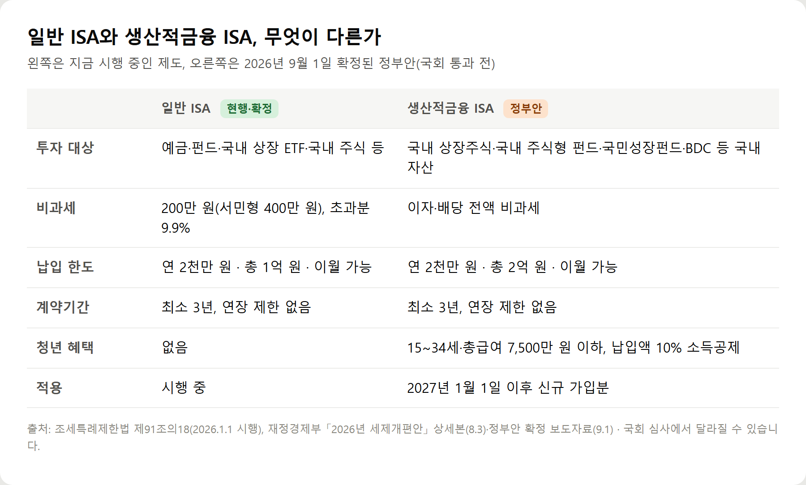
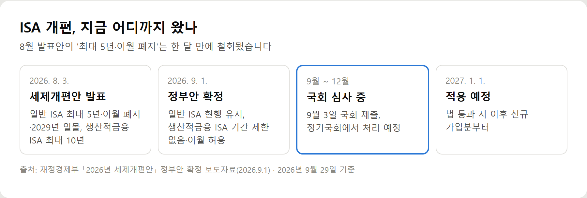
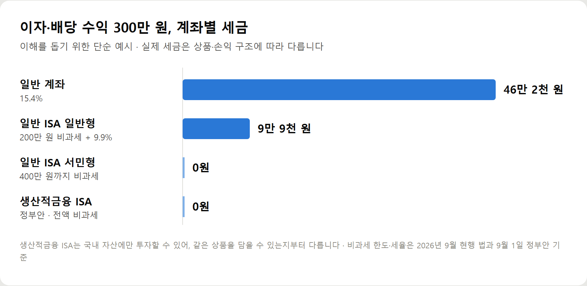

<meta charset="utf-8">
<title>2027년 ISA 개편 FAQ와 5줄 요약 — 나의 투자 그리고 행복한 여행</title>
<meta name="description" content="2027년 ISA 개편은 9월 1일 정부안 기준 일반 ISA 현행 유지(5년 제한·이월 폐지 철회), 이자·배당 전액 비과세인 국내 자산 전용 생산적금융 ISA 신설이 핵심입니다. 국회 통과 전이라 확정과 정부안을 구분해 정리했습니다.">
<meta name="viewport" content="width=device-width, initial-scale=1">
<link rel="canonical" href="https://worldtraveler1.tistory.com/120">
<link rel="preconnect" href="https://fonts.googleapis.com">
<link rel="preconnect" href="https://fonts.gstatic.com" crossorigin>
<link rel="stylesheet" href="https://fonts.googleapis.com/css2?family=Hahmlet:wght@400;600;800&family=IBM+Plex+Mono:wght@400;500&family=IBM+Plex+Sans+KR:wght@300;400;500;600&display=swap">

<style>
  :root{
    --paper:#F2EEE6;--surface:#FAF8F3;--surface-2:#E7E1D5;
    --ink:#191510;--ink-2:#4A4235;--ink-3:#7D7364;
    --line:#D6CEBF;--line-soft:#E4DDD0;--accent:#B06A15;--accent-bright:#C2761A;
    --up:#E5484D;--down:#3B82F6;
    --f-display:"Hahmlet",'Nanum Myeongjo',"Apple SD Gothic Neo",serif;
    --f-body:"IBM Plex Sans KR","Apple SD Gothic Neo","Malgun Gothic",sans-serif;
    --f-mono:"IBM Plex Mono","SFMono-Regular",Consolas,monospace;
    --pad:clamp(20px,5vw,64px);
  }
  @media (prefers-color-scheme:dark){
    :root:not([data-theme="light"]){
      --paper:#0B1120;--surface:#121A2C;--surface-2:#1A2439;
      --ink:#E9EEF7;--ink-2:#A9B5C9;--ink-3:#72809A;
      --line:#26314A;--line-soft:#1D2739;--accent:#E8A33D;--accent-bright:#F0B45C;
    }
  }
  *{box-sizing:border-box;}
  body{margin:0;background:var(--paper);color:var(--ink);font-family:var(--f-body);
    font-weight:300;font-size:1rem;line-height:1.75;-webkit-font-smoothing:antialiased;}
  a{color:inherit;}
  img{max-width:100%;height:auto;}
  .wrap{max-width:760px;margin:0 auto;padding-inline:var(--pad);}
  .nav{position:sticky;top:0;z-index:20;background:color-mix(in srgb,var(--paper) 88%,transparent);
    backdrop-filter:saturate(180%) blur(12px);border-bottom:1px solid var(--line);}
  .nav-in{display:flex;align-items:center;justify-content:space-between;height:58px;}
  .brand{font-family:var(--f-display);font-weight:600;font-size:1rem;letter-spacing:-.02em;text-decoration:none;}
  .back{font-family:var(--f-mono);font-size:.72rem;color:var(--ink-3);text-decoration:none;}
  .article{padding-block:clamp(40px,7vw,72px) clamp(56px,9vw,96px);}
  .eyebrow{font-family:var(--f-mono);font-size:.68rem;letter-spacing:.16em;text-transform:uppercase;
    color:var(--accent);margin:0 0 14px;}
  h1{font-family:var(--f-display);font-weight:800;font-size:clamp(1.6rem,4.4vw,2.3rem);
    line-height:1.3;letter-spacing:-.03em;margin:0 0 16px;}
  .byline{font-family:var(--f-mono);font-size:.72rem;color:var(--ink-3);
    padding-bottom:24px;border-bottom:1px solid var(--line);margin-bottom:32px;}
  h2{font-family:var(--f-display);font-weight:600;font-size:1.25rem;letter-spacing:-.02em;margin:42px 0 14px;}
  h3{font-family:var(--f-display);font-weight:600;font-size:1.05rem;letter-spacing:-.02em;
    margin:30px 0 10px;padding-top:14px;border-top:1px solid var(--line-soft);}
  h3 .code{font-family:var(--f-mono);font-size:.7rem;font-weight:400;color:var(--ink-3);margin-left:6px;}
  p{margin:0 0 18px;color:var(--ink-2);}
  ul.checks{margin:0 0 18px;padding-left:20px;color:var(--ink-2);}
  ul.checks li{margin-bottom:8px;font-size:.94rem;}
  table{width:100%;border-collapse:collapse;font-size:.88rem;margin-bottom:8px;}
  th{font-family:var(--f-mono);font-size:.66rem;letter-spacing:.06em;text-transform:uppercase;
    color:var(--ink-3);text-align:right;padding:8px 6px;border-bottom:1px solid var(--line);}
  th:first-child{text-align:left;}
  td{padding:10px 6px;border-bottom:1px solid var(--line-soft);color:var(--ink-2);}
  td.num{font-family:var(--f-mono);text-align:right;font-variant-numeric:tabular-nums;}
  td.up{color:var(--up);} td.down{color:var(--down);}
  .scroll{overflow-x:auto;}
  figure{margin:22px 0;}
  figure img{display:block;border-radius:3px;background:var(--surface-2);}
  figcaption{margin-top:8px;font-family:var(--f-mono);font-size:.68rem;color:var(--ink-3);text-align:center;}
  .note{margin-top:34px;padding:16px 18px;border-left:3px solid var(--accent);
    background:var(--surface);border-radius:0 3px 3px 0;}
  .note p{margin:0;font-size:.85rem;color:var(--ink-3);}
  .foot{border-top:1px solid var(--line);background:var(--surface);padding-block:30px 38px;}
  .foot p{margin:0;font-size:.8rem;color:var(--ink-3);}
</style>

<nav class="nav">
  <div class="wrap nav-in">
    <a class="brand" href="../index.html">나의 투자 그리고 행복한 여행</a>
    <a class="back" href="../index.html#stocks">← 시황으로</a>
  </div>
</nav>

<main class="wrap article">
  <p class="eyebrow">Market</p>
  <h1>2027년 ISA 개편 FAQ와 5줄 요약 (2026년 9월 정부안 기준)</h1>
  <p class="byline">주식 · 2026-09-29 기준</p>

  <p><b>이 포스팅은 쿠팡 파트너스 활동의 일환으로, 이에 따른 일정액의 수수료를 제공받습니다.</b></p>
  <p><b>이 포스팅은 네이버 쇼핑 커넥트 활동의 일환으로, 판매 발생 시 수수료를 제공받습니다.</b></p>
  <p>한 줄 요약: 기존 ISA는 현행 유지, 국내 자산 전용 생산적금융 ISA가 새로 생기는 정부안이 국회 심사 중입니다.</p>
  <h2>5줄 요약</h2>
  <ul class="checks">
    <li>현행 ISA: 비과세 200만·400만 원, 연 2천만·총 1억 원, 이월 가능 — 확정</li>
    <li>8월안의 일반 ISA 최대 5년·이월 폐지·2029년 일몰은 9월 1일 정부안에서 철회</li>
    <li>생산적금융 ISA 신설: 국내 자산 전용, 이자·배당 전액 비과세, 총 2억 원 — 정부안</li>
    <li>청년형: 15~34세·총급여 7,500만 원 이하, 납입액 10% 소득공제 — 정부안</li>
    <li>국회 심사 중. 통과 시 2027년 1월 1일 이후 신규 가입분부터</li>
  </ul>
  <figure><figcaption>일반 ISA(현행)와 생산적금융 ISA(2026년 9월 1일 정부안) 비교</figcaption></figure>
  <h2>ISA 개편 FAQ</h2>
  <p>Q. 일반 ISA 5년 제한은 확정인가요? — 아닙니다. 9월 정부안에서 철회됐습니다.</p>
  <p>Q. 미사용 납입한도 이월이 없어지나요? — 9월 정부안 기준 현행 유지입니다.</p>
  <p>Q. 비과세 한도가 500만 원으로 늘었나요? — 2026년 9월 현행 법은 200만·400만 원입니다.</p>
  <p>Q. 생산적금융 ISA는 언제 가입하나요? — 정부안은 2027년 1월 1일 이후 신규 가입분부터입니다.</p>
  <p>Q. 기존 ISA 만기 자금을 옮길 수 있나요? — 만기 시 생산적금융 ISA에 일시납(2억 원 한도)을 허용하는 방안이 정부안에 있습니다.</p>
  <p>Q. 해외 ETF를 담을 수 있나요? — 정부안의 투자 대상은 국내 자산입니다.</p>
  <p>Q. 금융소득종합과세 대상자도 가입하나요? — 두 계좌 모두 직전 3년 중 대상이었다면 제외입니다.</p>
  <p>Q. 3년 안에 돈을 빼면요? — 원금을 넘는 인출은 해지로 보고 비과세분을 추징하는 안입니다.</p>
  <figure><figcaption>ISA 개편 진행 상황 — 8월 발표안에서 9월 정부안 확정, 국회 심사까지</figcaption></figure>
  <h2>업데이트 확인 방법</h2>
  <ul class="checks">
    <li>재정경제부: 국회 통과 후 '개정세법 해설'</li>
    <li>국가법령정보센터: 조세특례제한법 제91조의18, 제91조의29(신설 예정)</li>
    <li>금융위원회 보도자료: 상품 출시 일정</li>
    <li>가입한 금융회사 공지</li>
  </ul>
  <p>세법 개정안은 보통 연말 본회의에서 처리됩니다. 결과가 나오면 이 페이지를 고치겠습니다.</p>
  <figure><figcaption>이자·배당 수익 300만 원일 때 계좌별 세금 (이해를 돕기 위한 단순 예시)</figcaption></figure>
  <div style="text-align:center;margin:30px 0"><a href="https://link.coupang.com/a/hq7nQzcePc" target="_blank" rel="nofollow sponsored noopener" style="display:inline-block;padding:15px 28px;background:#E34948;color:#fff;font-weight:700;font-size:18px;text-decoration:none;border-radius:8px"><b>▶ 쿠팡에서 보기 — 마법의 연금 굴리기 — 연금저축·IRP·ISA 절세 삼총사 (김성일, 에이지21)</b></a></div>
  <div style="text-align:center;margin:30px 0"><a href="https://naver.me/xllxI2HU" target="_blank" rel="nofollow sponsored noopener" style="display:inline-block;padding:15px 28px;background:#E34948;color:#fff;font-weight:700;font-size:18px;text-decoration:none;border-radius:8px"><b>▶ 네이버에서 보기 — 아이비스 포켓 가계부 (돈 관리·예산 관리)</b></a></div>
  <div style="text-align:center;margin:30px 0"><a href="https://danielmoon82.github.io/moon/posts/isa-maturity-2026-09-29.html" target="_blank" rel="nofollow sponsored noopener" style="display:inline-block;padding:15px 28px;background:#E34948;color:#fff;font-weight:700;font-size:18px;text-decoration:none;border-radius:8px"><b>▶ ISA 만기 전 체크리스트 6가지</b></a></div>
  <div style="text-align:center;margin:30px 0"><a href="https://worldtraveler1.tistory.com/120" target="_blank" rel="nofollow sponsored noopener" style="display:inline-block;padding:15px 28px;background:#E34948;color:#fff;font-weight:700;font-size:18px;text-decoration:none;border-radius:8px"><b>▶ 원문에서 전체 내용 보기 — 2027년 ISA 개편 총정리</b></a></div>
  <h2>참고자료</h2>
  <ul class="checks">
    <li>조세특례제한법 제91조의18(개인종합자산관리계좌에 대한 과세특례), 시행 2026.1.1</li>
    <li>재정경제부 「2026년 세제개편안」 상세본 18~21쪽 (2026.8.3)</li>
    <li>재정경제부 「2026년 세제개편안」 정부안 확정 보도자료·주요 수정사항 (2026.9.1)</li>
  </ul>
  <div class="note"><p>이 글은 2026년 9월 29일 기준 현행 조세특례제한법과 2026년 9월 1일 확정된 정부 세제개편안을 바탕으로 정리한 일반 정보입니다. 생산적금융 ISA 관련 내용은 국회 통과 전인 정부안이라 심사 과정에서 달라질 수 있고, 제도가 바뀌면 이 글도 업데이트가 필요할 수 있습니다. 특정 상품 가입이나 투자를 권하지 않으며, 세금 예시는 이해를 돕기 위한 단순 예시입니다.</p></div>
  <p style="font-size:12px;color:#999;line-height:1.6;margin-top:36px">이 포스팅은 쿠팡 파트너스 활동의 일환으로, 이에 따른 일정액의 수수료를 제공받습니다.</p>
  <p style="font-size:12px;color:#999;line-height:1.6;margin-top:36px">이 포스팅은 네이버 쇼핑 커넥트 활동의 일환으로, 판매 발생 시 수수료를 제공받습니다.</p>
</main>

<footer class="foot">
  <div class="wrap"><p>나의 투자 그리고 행복한 여행 · 투자 판단의 참고 자료일 뿐, 매수·매도를 권유하지 않습니다.</p></div>
</footer>
